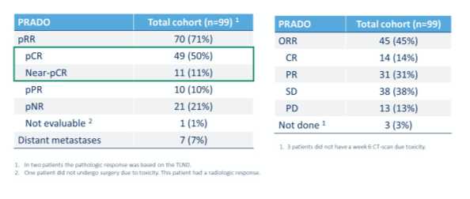
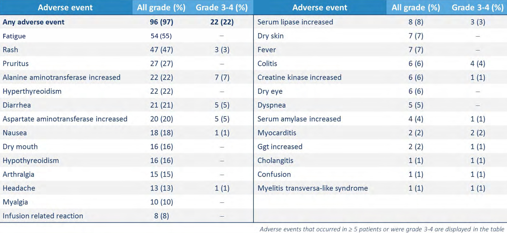

Diagnóstico, tratamiento y seguimiento del melanoma localizado y de alto riesgo

2.5 Neoadyuvancia
El tratamiento clásico del melanoma, tal y como se ha comentado en el capítulo anterior, consiste en extirpar lo antes posible el tumor primario y sus metástasis cuando las tiene y sean resecables. Esto es lo habitual para las metástasis linfáticas y pocas veces es posible para las metástasis viscerales.
El concepto de neoadyuvancia es distinto a todo lo expuesto previamente ya que se trata de aplicar el tratamiento antes de extirpar el melanoma primario o sus metástasis, generalmente linfáticas. Con el tratamiento neoadyuvante se pretende reducir su el tamaño de la lesión, para facilitar su extirpación posterior o hacer desaparecer parte de las lesiones en muchos casos (facilitando su extirpación quirúrgica posterior), así como valorar si el tratamiento es más eficaz a largo plazo que si se hubiera seguido el orden tradicional, es decir, extirpación inicial del tumor primario y sus metástasis linfáticas e inmunoterapia adyuvante posterior.
¿Cuáles son los beneficios y objetivos potenciales del tratamiento neoadyuvante?
-
La eficacia terapéutica potencial del tratamiento puede determinarse para cada paciente.
-
Permite reducir la carga tumoral antes de la cirugía, siendo un tratamiento eficaz para reducir rápidamente el tumor reduce la extensión de la cirugía requerida.
-
Utiliza los datos de respuesta patológica como potencial marcador de resultados para una supervivencia global y libre de recaídas.
-
Ofrece una mejor idea del pronóstico basado en la respuesta al tratamiento neoadyuvante.
-
Puede inducir una respuesta de células T más fuerte y más amplia específica del tumor.
-
Permite la identificación más fácil de un biomarcador basal debido a poblaciones de pacientes más homogéneas facilita la comprensión de los mecanismos de respuesta a la terapia.
-
Perfil de toxicidad fácilmente manejable o predecible.
PRINCIPIOS BÁSICOS DE NEOADYUVANCIA EN MELANOMA
El papel de la inmunoterapia neoadyuvante en pacientes con melanoma en estadio III resecado está evolucionando, y a día de hoy a la espera de los resultados de los ensayos clínicos que lleven a la aprobación de diferentes tratamientos en el contexto neoadyuvante, a los pacientes candidatos a neoadyuvancia se les debe ofrecer la oportunidad de ser incluidos dentro de ensayos clínicos, si es posible.
Los datos iniciales de los ensayos de fase II son prometedores para la combinación de iBRAF+iMEK neoadyuvante en pacientes BRAF mutados, y sobre todo para la combinación de nivolumab más ipilimumab neoadyuvante en pacientes BRAF mutados y no mutados, que produce tasas de respuesta patológica entre el 70 y el 80 por ciento, puede reducir la morbilidad quirúrgica y su perfil de efectos adversos a la dosis de ipilimumab 1mg/kg + nivolumab 3mg/kg es asumible. Sin embargo, se necesitan más estudios que demuestren un claro beneficio en supervivencia antes de incorporar el tratamiento neoadyuvante ya sea con inmunoterapia o con terapia dirigida en la práctica clínica habitual.
¿Cuáles son los tratamientos neoadyuvantes potenciales?
INMUNOTERAPIA Y NEOADYUVANCIA EN MELANOMA
En un ensayo de fase II abierto (PRADO), 99 pacientes con melanoma en estadio IIIB o IIIC y un ganglio linfático índice (ILN) con enfermedad medible en las imágenes de tomografía computarizada (TC) fueron tratados de forma neoadyuvante con la combinación de nivolumab (3 mg / kg cada tres semanas) e ipilimumab (1 mg / kg cada tres semanas) hasta dos dosis seguidas de la resección de la ILN marcada.
PRADO: Study design
Esta estrategia de tratamiento neoadyuvante se había establecido previamente mediante un ensayo aleatorizado de fase II (OpACIN-neo), el cual tenia el siguiente esquema de tratamiento:
The OpACIN-neo study identified neoadjuvant IPI 1 mg/kg + NIVO 3 mg/kg as the optimal treatment scheme
El claro beneficio objetivado dentro del ensayo fase II (OpACIN-neo), dio pie a buscar nuevos diseños como el del estudio PRADO.
Promising RFS after 2 years follow-up and pathologic response predicts outcome
Dentro del ensayo clínico PRADO, los pacientes fueron tratados mediante un enfoque personalizado basado en respuestas basadas en la tasa de respuesta patológica de la ILN. Los pacientes con ≤10 por ciento de células tumorales viables (es decir, respuesta patológica completa [pCR] o casi pCR) no recibieron cirugía adicional (p. Ej., Disección total de los ganglios linfáticos [TLND]) y fueron observados; aquellos con entre el 10 y el 50 por ciento de células tumorales se clasificaron como que tenían una respuesta parcial patológica [pPR] y recibieron TLND seguido de observación; aquellos con> 50 por ciento de células tumorales se clasificaron como que tenían una falta de respuesta patológica [pNR] y recibieron TLND seguida de terapia sistémica adyuvante (ya sea nivolumab o la combinación de dabrafenib más trametinib en pacientes con un tumor con mutación BRAF V600):
-
En toda la población del estudio, se observaron respuestas patológicas (pCR) con el tratamiento de inmunoterapia combinada en 70 pacientes (71%), incluidos 60 pacientes con un pCR o casi pCR (61%) y 10 pacientes con un pPR (10%); a su vez, se observó pNR en 20 pacientes (21%).
-
La tasa de respuesta radiológica general fue del 45%, e identificó con precisión a siete pacientes (7%) que desarrollaron enfermedad metastásica a distancia antes de la resección de ILN, lo que influyó en sus estrategias de tratamiento posteriores; sin embargo, la evaluación por imágenes generalmente subestimó el grado de respuestas patológicas, siendo ésta objetivada en una mayor frecuencia en el momento de la cirugía, mostrando así que a día de hoy existe una limitación y una discordancia entre respuesta radiológica y respuesta patológica:
Pathologic and Radiologic Response
-
La tasa de eventos adversos inmunomediados dentro del ensayo PRADO de grado ≥3 fue del 22% en las primeras 12 semanas:
Inmune-related AEs within the first 12 weeks
-
Utilizando inmunoterapia neoadyuvante, se omitió la TLND en 59 de 99 pacientes (60%). Además, en comparación con los pacientes tratados con TLND, los que se sometieron únicamente a la cirugía de los ganglios linfáticos índice informaron tasas reducidas de eventos adversos quirúrgicos (81% frente al 41%) y una mejor calidad de vida.
TERAPIA DIRIGIDA Y NEOADYUVANCIA EN MELANOMA
Los primeros reportes de casos que utilizaron vemurafenib neoadyuvante y dabrafenib documentaron resultados prometedores en pacientes con melanoma operable en estadio III. La combinación de dabrafenib y trametinib neoadyuvante se ha probado en varios ensayos de fase II. 35 pacientes con melanoma voluminoso en estadio IIIB / C BRAF V600E / K mutado. Se administró una dosis estándar de dabrafenib y trametinib durante 12 semanas antes de la linfadenectomía terapéutica seguida de 40 semanas como terapia adyuvante. En el momento de la evaluación quirúrgica, 17 pacientes habían alcanzado una RCp (52%) y 16 tenían una RC residual (48%). No se observó progresión de la enfermedad durante el período de terapia neoadyuvante. En un período de seguimiento medio de 12,1 meses (IC del 95%: 8,8 a 14,8 meses), se observó recurrencia de la enfermedad en 12 pacientes (36%), y 4 pacientes tuvieron recurrencia mientras se sometían a terapia adyuvante dirigida.
De manera similar, un ensayo publicado recientemente demostró la seguridad y eficacia de la terapia combinada neoadyuvante y adyuvante con dabrafenib y trametinib en comparación con la cirugía estándar de atención (SOC) en pacientes con melanoma con mutación en estadio III, oligometastásico o en estadio IV BRAFV600E o BRAFV600K. Se asignó al azar a 21 pacientes en una proporción de 1: 2 a cirugía inicial y consideración para terapia adyuvante estándar (grupo SOC) o terapia neoadyuvante con dabrafenib más trametinib durante 8 semanas seguidas de cirugía y hasta 44 semanas de terapia adyuvante con dabrafenib más trametinib. Los pacientes que recibieron terapia dirigida neoadyuvante y adyuvante tuvieron un riesgo 60 veces menor de recaída después de la cirugía en comparación con los pacientes que se sometieron a cirugía SOC (la mediana de supervivencia sin eventos fue de 19,7 meses frente a 2,9 meses, respectivamente, cociente de riesgo 0,016, p < 0,0001), y el ensayo se detuvo temprano porque alcanzó el objetivo principal de mejorar la SLR con tratamiento neoadyuvante. En el grupo que recibió dabrafenib neoadyuvante y trametinib, la respuesta radiológica general se observó en 11 (85%) de 13 pacientes evaluables (2 RC, 9 PR y 2 enfermedad estable), y los 13 pacientes lograron el control radiográfico de la enfermedad. Entre los 12 pacientes del grupo de terapia neoadyuvante que se sometieron a cirugía, 7 (58%) lograron RCp y 2 (17%) lograron una respuesta parcial patológica. Los pacientes con una RCp tuvieron una supervivencia libre de metástasis a distancia significativamente más prolongada. A pesar de las limitaciones del número de pacientes estudiados, el ensayo proporcionó una importante prueba de concepto para respaldar la justificación del uso de la terapia dirigida neoadyuvante en pacientes con melanoma resecable quirúrgicamente de alto riesgo con una mutación BRAF hereditaria. Los datos también mostraron un perfil de toxicidad manejable del régimen combinado, similar al informado en estudios de pacientes con melanoma metastásico, siendo fiebre y escalofríos los eventos adversos más comunes.
Los estudios de biomarcadores realizados en este ensayo proporcionaron información valiosa para comprender los determinantes de la respuesta al fármaco tumoral. La caracterización molecular reveló que los pacientes que alcanzaron un pCR tenían una positividad pERK basal significativamente menor de melanoma no viable dentro del tejido muestreado en comparación con los pacientes que no lograron pCR. Curiosamente, la expresión de TIM-3 (inmunoglobulina de células T y dominio de mucina que contiene-3) y LAG-3 (gen 3 de activación de linfocitos) aumentó significativamente en las células T dentro de los tumores basales que no lograron un pCR en comparación con los tumores con pCR. Esto puede respaldar la idea de agregar en un futuro, la inmunoterapia con inhibidores de puntos de control a la terapia dirigida neoadyuvante con dabrafenib y trametinib en un esfuerzo por aumentar las respuestas y retrasar la recaída superando los mecanismos de resistencia de las células T mediados por puntos de control.
EVALUACIÓN PATOLÓGICA DE MUESTRAS DE MELANOMA RESECADAS DESPUÉS DE LA TERAPIA NEOADYUVANTE
Es de vital importancia que la comunidad científica que aborda el tratamiento y a la investigación en melanoma se organice en torno a los principios básicos de la terapia neoadyuvante para lograr un impacto significativo en el avance de los resultados clínicos y el descubrimiento científico necesario para la aceptación de un enfoque neoadyuvante en el pilar de la terapia del melanoma.
Con la pCR emergiendo como el criterio principal de valoración en numerosos ensayos neoadyuvantes, es fundamental estandarizar los enfoques para la evaluación de la respuesta tumoral patológica, a fin de facilitar la comparación de los resultados en diferentes ensayos clínicos.
El Consorcio Internacional de Melanoma Neoadyuvante ha preparado pautas de consenso para el examen patológico y la notificación de muestras quirúrgicas de pacientes con melanoma en estadio IIIB / C / D o oligometastásico en estadio IV del AJCC (octava edición) tratados con inmunoterapia neoadyuvante con fármacos anti-checkpoint o bien con terapias dirigidas. Se han establecido, como se ve en la imagen inferior, unos criterios comunes a la hora de definir el grado de respuesta patológica en los lechos tumorales que incluye pCR (ausencia completa de tumor viable residual), respuesta patológica mayor / casi pCR (<10% del tumor viable), respuesta patológica parcial ( < 50% del tumor viable), y falta de respuesta patológica ( > 50% del tumor viable). También se han establecido unos objetivos comunes a la hora de diseñar un ensayo clínico de neoadyuvancia, así como unas consideraciones estadísticas que deben regir el diseño y análisis de los datos obtenidos en dichos ensayos clínicos. Además, en estas guías también se proporcionan patrones histopatológicos de muestras después del tratamiento neoadyuvante.
Definición:
Se define como tratamiento neoadyuvante (también llamado preoperatorio o primario) aquel tratamiento que se administra como primer paso para reducir el tamaño del tumor antes del tratamiento principal que generalmente consiste en cirugía.
Conclusión:
La terapia neoadyuvante se implementaría idealmente en el manejo del melanoma en pacientes con enfermedad localmente avanzada con el objetivo de permitir la resección quirúrgica definitiva con complicaciones mínimas, reducir el riesgo de recurrencia y prolongar la supervivencia específica del melanoma. La terapia neoadyuvante eficaz que puede conducir a una tasa significativa de pCR puede minimizar la extensión de la cirugía necesaria. Al brindar acceso a bioespecímenes antes y después de la terapia, es probable que dichos estudios proporcionen percepciones mecánicas notables y hallazgos de biomarcadores que pueden tener impactos importantes y duraderos. En el desarrollo de fármacos, estos estudios pueden permitir conocimientos importantes sobre el melanoma y su respuesta biológica e inmunológica a los nuevos regímenes terapéuticos que se están probando.